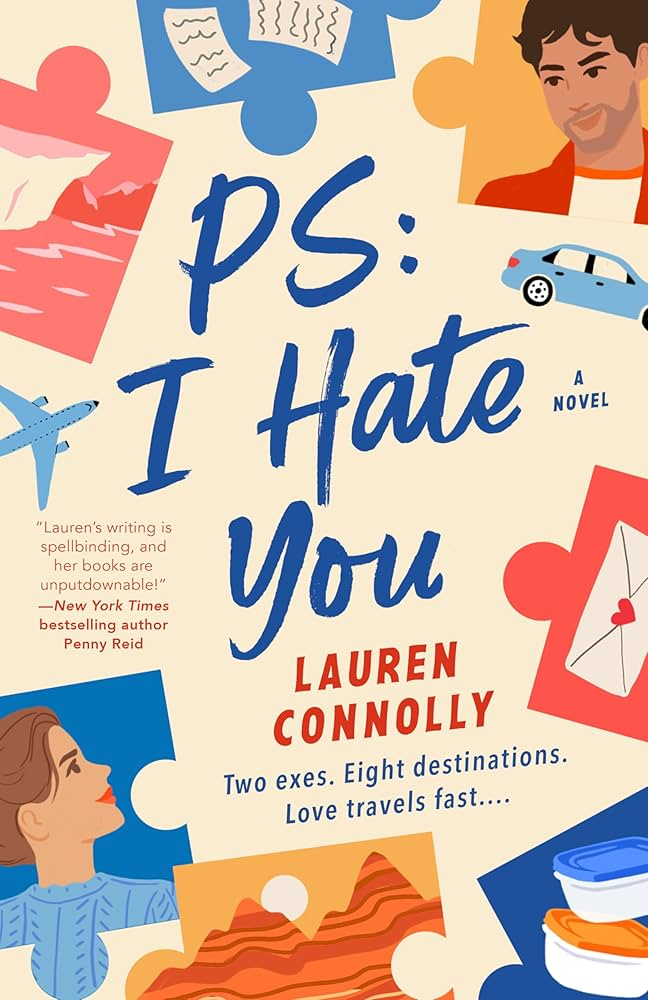
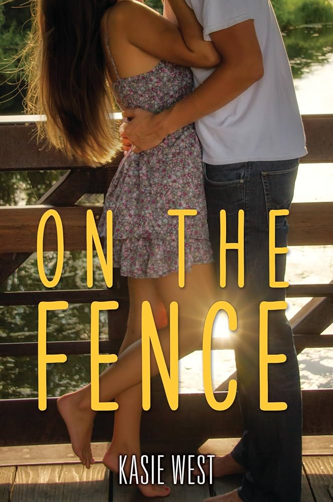
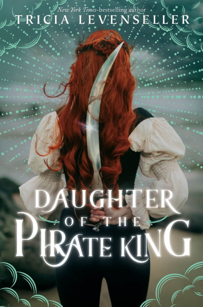
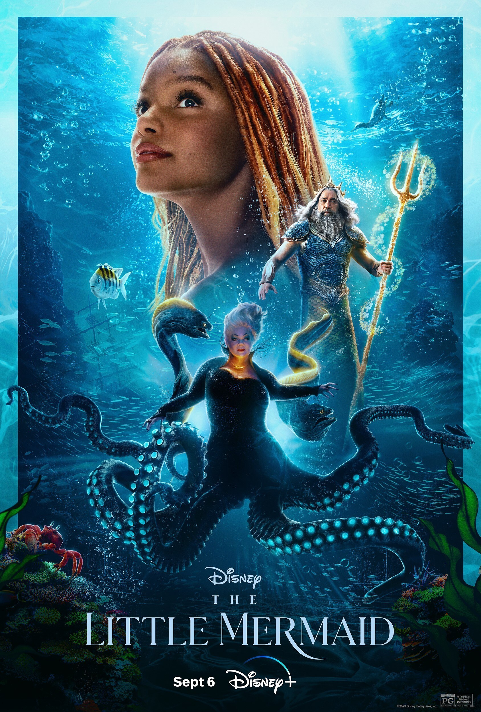
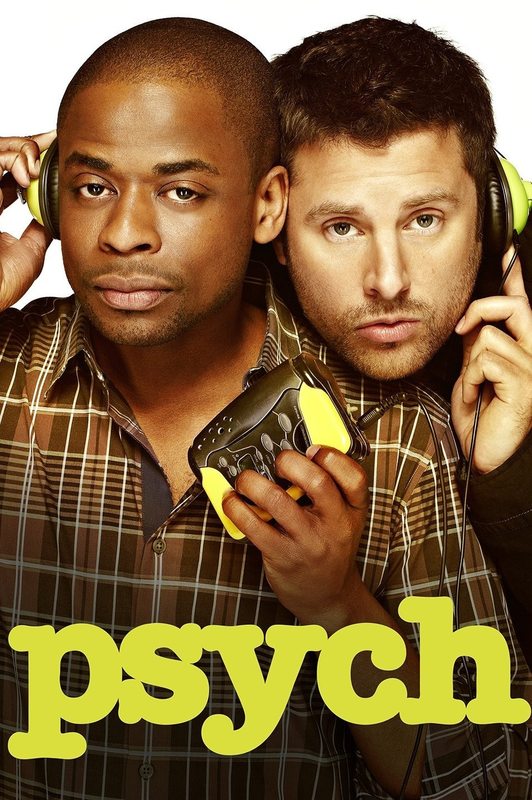
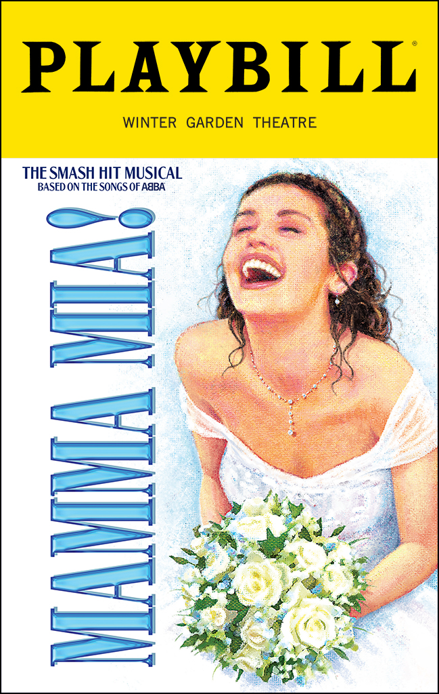
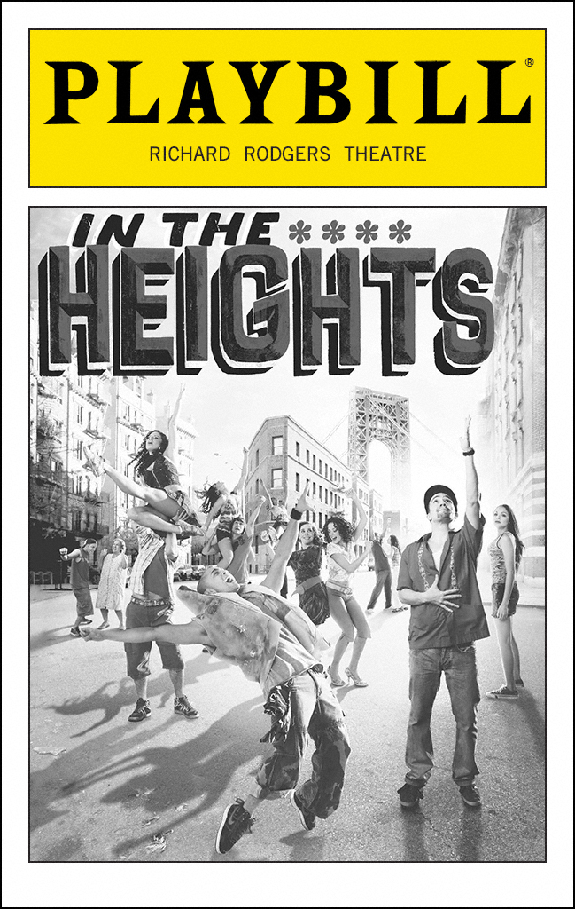

Books
P.S. I Hate You
by Lauren Connolly

This story takes place over a few years in every different season, but I think it gives distinctly summer vibes. It's about grief and love and what it means to move on. It's incredibly sweet and compulsively readable.
On The Fence
by Kasie West

I love most of what Kasie West writes; she's always good for a feel-good, compulsively readable, cute little romance. Charlie and Braden find solace with each other chatting over the fence in the middle of the night. This book feels like fireflies and cookouts.
Daughter of the Pirate King
by Tricia Levenseller

Pirates are always a win, especially in the summer. This high-seas adventure with a fiesty heroine and an adorable enemies-to-lovers romance is ideal for the long days of summer. Once your done, you'll want to get out on the lake.
Movies
The Little Mermaid (Live Action)
I know everyone hates the live action Disney remakes, but the live action Little Mermaid is one of my favorite movies. Both versions of the story are so whimsical and magical, absolutely perfect for summer. If you haven't given the live action a chance, do it for me and my younger self. And once you're done watching, I encourage you head to the pool or beach to play mermaids!
Family Pack

You will have fun with this movie whether you've played Werewolves or not. Think Jumanji, a family pulled into a board game, except the goal of the game is to use your superpowers to find the werewolves before they kill you. It's a low-budget French movie, but it's made with so much love that I can't help but love it.
Set It Up

This is my favorite movie because it is perfect rom-com goodness. This was also the first movie I'd seen with Glen Powell in it, and we all know he's aged well. Two assistants endeavor to set up their high-strung bosses and face the consequences. Light, cute, perfect.
TV Shows
Psych
If you've never seen an episode of Psych, you don't know what you're missing. This show is hilarious and so so fun. The general premise is that a hyper observant man with a photographic memory pretends to be a psychic to help the police solve murders. I know, bonkers. Bonkers and amazing.
Musicals
Mamma Mia!
If you haven't seen Mamma Mia!, you've at least heard several of the songs. This one is worth seeing on stage. Beachy both in setting and vibe, Mamma Mia provides a warm and ridiculous escape from any possible woes.
In The Heights
Lin Manuel Miranda is super famous at this point, but his freshman musical isn't quite as well-known. It should be. Set in Washington Heights in New York City during the height of summer, this musical is the perfect summertime watch. It'll make you feel alive and long for a nice cold piragua.